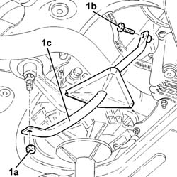
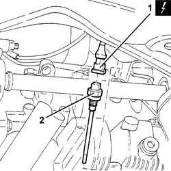
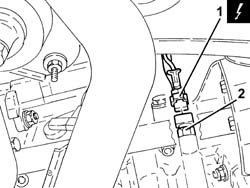

1084A40 engine oil level sensor - r + r
- Path
- Procedures > 10 ENGINE > 1084 ENGINE LUBRICATION SYSTEM > 1084A indicators/check devices > 1084A40 engine oil level sensor - r + r
- Kind
- repair procedure (removal / refitting; the operation number is the code)
- Applies to
- engines: 1.9 JTD 8V, 1.9 JTD 16V; all production periods
- Interactive page
- https://sloeber94.github.io/elrnDB-a147/en/#/3025070
Applies to: engines: 1.9 JTD 8V; all production periods
 Removing
Removing
 Refitting
RefittingPlace the car on a ramp.
Disconnect the battery negative terminal.
Raise the lift.
7055B54 under-engine guard - r r
1. Undo the nut (1a) and bolt (1b) and remove the power unit rear rigid mount reinforcement (1c).

Applies to: engines: 1.9 JTD 8V; all production periods
1. Disconnect the electrical connection from the switch.
 | Name | Connector |
|---|---|---|
1 | Engine oil level sensor |
2. Undo and remove the engine oil pressure warning light switch.

Applies to: engines: 1.9 JTD 8V; all production periods
Refitting
RemovingFit the engine oil pressure warning light switch.
 | Fastening | Component | Ø | Value (daNm) |
|---|---|---|---|---|
- | Sensor | OIL LEVEL DIPSTICK SENSOR | M12 x 1.25 | 3 |
Connect the electrical connection
| Name | Connector |
|---|---|---|
- | Engine oil level sensor |
Fit the rigid mount reinforcement and secure to the block and crankcase.
Tighten the reinforcement retaining bolt and nut to torque.
| Fastening | Component | Ø | Value (daNm) |
|---|---|---|---|---|
- | Nut | POWER UNIT RIGID REAR SUPPORT REINFORCEMENT ROD.... | M12 | (Flexible mounting) 7.9 ÷ 9.7 |
| Fastening | Component | Ø | Value (daNm) |
|---|---|---|---|---|
- | Bolt | POWER UNIT RIGID REAR SUPPORT REINFORCEMENT ROD.... | M10 | (Cylinder block/crankcase) 4.5 ÷ 5.5 |
7055B54 under-engine guard - r r
Lower the lift.
Connect the battery negative terminal.
Remove the vehicle from the ramp.
Applies to: engines: 1.9 JTD 16V; all production periods
Removing
RefittingPosition the vehicle on the ramp.
Ensure that the ignition key is in the OFF position, then disconnect the negative battery terminal (-).
| Name | Connector |
|---|---|---|
- | Battery |
Proceed with removal 7055B54 under-engine guard - r r .
1. Disconnect the electrical connection for the engine oil level sensor.
| Name | Connector |
|---|---|---|
1 | Engine oil level sensor |
2. Undo and remove the engine oil level sensor.

Applies to: engines: 1.9 JTD 16V; all production periods
Refitting
RemovingPlace the engine oil level sensor back in its housing and tighten it to the recommended torque.
| Fastening | Component | Ø | Value (daNm) |
|---|---|---|---|---|
- | - | OIL LEVEL DIPSTICK SENSOR | M12 | (Crankcase sump side) 2.0 ÷ 3.0 |
Connect the electrical connection for the engine oil level sensor.
Proceed with refitting 7055B54 under-engine guard - r r .
Connect the negative (-) battery terminal
Remove the car from the ramps.